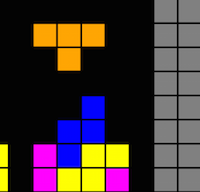

About Me
 Hello, my name is Kendal Cockrel and I'm a Junior at Brown University studying Computer Science and Ethnic Studies. Born and raised in Detroit, MI, I grew up with love for computers and technology and was always known as the tech savvy kid in the family.
Hello, my name is Kendal Cockrel and I'm a Junior at Brown University studying Computer Science and Ethnic Studies. Born and raised in Detroit, MI, I grew up with love for computers and technology and was always known as the tech savvy kid in the family.
Currently I am an undergraduate teaching assistant for CS15: Intro to Object Oriented Programming in Java. Spot me in the Brown UTA Endowment video!
When I'm not reading or programming, you can catch me watching Sci-Fi movies and reading comics.

Brown University APIs: Dining & Nutrition
Brown APIs is underneath the Hack@Brown umbrella and seeks to give student developers easier access to university data. My current project is expanding the Dining API to include a larger number of campus eateries and provide nutrition data on menu items offered.
Brown APIs

Mosaic+
Mosaic is a student group within Brown Univerity's CS Department advocating for racial diversity in Computer Science. Currently I am on the Transition Program team, working on creating a pre-orientation program to acclimate incoming Freshman to the rigors of CS at Brown and beyond.
Mosaic+ on Facebook

KeepUp
The project KeepUp was a group final project done for a software engineering course. KeepUp is a web based scheduling application that allows user to schedule events with others by crossreferencing their availability and prerefered times. For KeepUp, I was on the Frontend team and got a chance to hone my web development and UI skills.

Tetris
Tetris was the second largest project for my introductory computer science course CS15. Though the support package I used for my orginal Tetris is now deprecated, I recently reimplemented it using the JavaFx graphics library.